Tema 7El teorema de Bloch i les bandes d'energia
Apunts en PDF Exercicis del tema
Índex
1 Del gas d'electrons lliures als electrons d'un cristall
El Tema 6 ha tractat els electrons de conducció com un gas de fermions dins d'una caixa buida. Amb aquesta sola idea i l'estadística de Fermi i Dirac s'expliquen la calor específica electrònica, la llei d'Ohm, la llei de Wiedemann i Franz i el coeficient de Hall dels metalls alcalins. Però el mateix tema va deixar obertes diverses preguntes que el model no pot respondre, perquè totes depenen d'allò que el model ignora: els ions de la xarxa.
- Per què el beril·li i l'alumini tenen un coeficient de Hall positiu, com si el corrent el portessin càrregues positives?
- Per què les masses tèrmiques del liti o del plom són el doble de la de l'electró, i per què el ferro i el níquel tenen una calor específica electrònica fins a deu vegades més gran que la del coure?
- Per què un electró pot recórrer milions de cel·les d'un cristall pur sense xocar amb cap ió, si els ions creen un potencial de diversos electronvolts?
- I, sobretot, per què uns materials són metalls i d'altres aïllants? Per al model d'electrons lliures, tot són metalls.
Aquest tema dona la resposta comuna a totes quatre preguntes: els electrons es mouen en un potencial que té la periodicitat de la xarxa, i aquesta periodicitat organitza les seves energies en bandes separades per buits (o gaps) on no hi ha cap estat. Hi arribarem per tres camins. Primer, la simetria: el teorema de Bloch diu quina forma té qualsevol estat d'un electró en un potencial periòdic (secció 2). Després, dos models oposats que el completen: partir d'electrons lliures i afegir-hi un potencial feble, el model d'electrons gairebé lliures (secció 3), o partir d'àtoms aïllats i deixar que els seus orbitals se solapin, el model d'enllaç fort (secció 4). Amb les bandes, comptar estats dirà qui és metall i qui és aïllant (secció 5), i un model semiclàssic dirà com es mouen els electrons d'una banda quan s'hi aplica un camp, amb l'aparició dels forats i de la massa efectiva (secció 6). Tot plegat és la base dels semiconductors del Tema 8.
1.1 L'aproximació d'un electró
Un cristall real és un problema de moltíssims cossos: \(10^{23}\) ions i encara més electrons, que interaccionen tots entre ells. Tota la teoria de bandes es basa en una simplificació que no justificarem aquí: cada electró es mou de manera independent en un potencial efectiu \(U(\vec r)\), que inclou l'atracció dels ions i la repulsió mitjana de tots els altres electrons. L'equació que cal resoldre és, doncs, l'equació de Schrödinger d'una sola partícula, \[\left[-\frac{\hbar^2}{2m}\nabla^2+U(\vec r)\right]\psi(\vec r)=\epsilon\,\psi(\vec r), \tag{1}\] i els electrons van omplint els estats que en surten d'acord amb el principi d'exclusió, com al Tema 6. L'única propietat de \(U(\vec r)\) que farem servir de manera general és que té la periodicitat de la xarxa de Bravais: \[U(\vec r+\vec T)=U(\vec r),\qquad \vec T=n_1\vec a_1+n_2\vec a_2+n_3\vec a_3 . \tag{2}\]
2 El teorema de Bloch
2.1 El potencial periòdic i la xarxa recíproca
Al Tema 2 vam veure que qualsevol funció amb la periodicitat d'una xarxa de Bravais es pot escriure com una sèrie de Fourier que només conté els vectors de la xarxa recíproca, \(\vec G=m_1\vec b_1+m_2\vec b_2+m_3\vec b_3\) amb \(m_i\) enters i \(\vec a_i\cdot\vec b_j=2\pi\delta_{ij}\). El potencial dels electrons no n'és cap excepció: \[U(\vec r)=\sum_{\vec G}U_{\vec G}\,e^{i\vec G\cdot\vec r},\qquad U_{\vec G}=\frac{1}{V_c}\int_{\text{cel{\textperiodcentered}la}}U(\vec r)\,e^{-i\vec G\cdot\vec r}\,d^3r , \tag{3}\] on \(V_c\) és el volum de la cel·la primitiva. Com que el potencial és real, \(U_{-\vec G}=U_{\vec G}^*\), i si el cristall té un centre d'inversió (el triem com a origen), els coeficients són reals i \(U_{-\vec G}=U_{\vec G}\). El terme \(U_0\) és el valor mitjà del potencial: només desplaça totes les energies, i el posarem a zero.
En una cadena de període \(a\), \(G=2\pi n/a\) i la primera zona és el segment \(-\pi/a<k\le\pi/a\). És la mateixa zona que ja vam fer servir per als fonons al Tema 4.
2.2 Condicions de contorn periòdiques: \(N\) vectors d'ona per zona
Com al Tema 6, tanquem el cristall amb condicions de contorn periòdiques (de Born i von Kármán). Si el cristall té \(N_i\) cel·les en la direcció \(\vec a_i\), exigim \(\psi(\vec r+N_i\vec a_i)=\psi(\vec r)\). Una ona plana \(e^{i\vec q\cdot\vec r}\) compleix aquesta condició si \(\vec q\cdot\vec a_i=2\pi n_i/N_i\) amb \(n_i\) enter, és a dir, si \[\vec q=\frac{n_1}{N_1}\vec b_1+\frac{n_2}{N_2}\vec b_2+\frac{n_3}{N_3}\vec b_3 . \tag{5}\] Els vectors d'ona permesos formen una graella molt fina a l'espai recíproc. Dins de la primera zona n'hi ha exactament \(N=N_1N_2N_3\), un per cada cel·la primitiva del cristall, i qualsevol funció d'ona que compleixi les condicions de contorn es pot expandir en aquestes ones planes: \[\psi(\vec r)=\sum_{\vec q}c_{\vec q}\,e^{i\vec q\cdot\vec r} . \tag{6}\]
2.3 L'equació central
Substituïm les dues sèries de Fourier a l'equació de Schrödinger (1). El terme cinètic actua sobre cada ona plana per separat, \[-\frac{\hbar^2}{2m}\nabla^2\psi=\sum_{\vec q}\frac{\hbar^2q^2}{2m}\,c_{\vec q}\,e^{i\vec q\cdot\vec r},\] i el terme de potencial és un producte de dues sèries, que barreja els seus índexs: \[U(\vec r)\,\psi(\vec r)=\sum_{\vec G}\sum_{\vec q}U_{\vec G}\,c_{\vec q}\,e^{i(\vec q+\vec G)\cdot\vec r} =\sum_{\vec q}\Big[\sum_{\vec G}U_{\vec G}\,c_{\vec q-\vec G}\Big]e^{i\vec q\cdot\vec r} .\] A l'últim pas hem canviat el nom de l'índex mut, \(\vec q+\vec G\to\vec q\), per tenir la mateixa exponencial a tots els termes. Com que les ones planes són linealment independents, el coeficient de cada \(e^{i\vec q\cdot\vec r}\) ha de ser el mateix als dos costats de l'equació, i s'obté un sistema d'equacions algebraiques per als coeficients: \[\boxed{\left(\frac{\hbar^2q^2}{2m}-\epsilon\right)c_{\vec q}+\sum_{\vec G}U_{\vec G}\,c_{\vec q-\vec G}=0} \tag{7}\] És l'equació central (Kittel l'anomena així): l'equació de Schrödinger escrita a l'espai recíproc. Diu que el potencial acobla el coeficient \(c_{\vec q}\) amb els coeficients \(c_{\vec q-\vec G}\), i només amb aquests.
Aquesta última observació ho resol tot. Les equacions (7) no barregen tots els \(\vec q\) entre ells: es descomponen en grups independents, cadascun format per un vector i tots els que en difereixen en un vector de la xarxa recíproca. Cada grup té un representant natural dins de la primera zona de Brillouin, que anomenem \(\vec k\), i els altres membres són \(\vec k-\vec G\). Escrivint \(\vec q=\vec k-\vec G'\) i reanomenant l'índex de la suma, \(\vec G''=\vec G'+\vec G\), el sistema per a un \(\vec k\) fix queda \[\left(\frac{\hbar^2|\vec k-\vec G'|^2}{2m}-\epsilon\right)c_{\vec k-\vec G'}+\sum_{\vec G''}U_{\vec G''-\vec G'}\,c_{\vec k-\vec G''}=0 , \tag{8}\] una equació per a cada \(\vec G'\). És un problema de valors propis d'una matriu amb una fila i una columna per a cada vector de la xarxa recíproca: la diagonal conté les energies cinètiques \(\hbar^2|\vec k-\vec G|^2/2m\), i fora de la diagonal hi ha els coeficients de Fourier del potencial. A la pràctica es trunca a uns quants vectors \(\vec G\), els de menys energia cinètica.
2.4 L'enunciat del teorema
Un cop resolt el sistema (8) per a un \(\vec k\), la funció d'ona només conté les ones planes del grup de \(\vec k\): \[\psi_{\vec k}(\vec r)=\sum_{\vec G}c_{\vec k-\vec G}\,e^{i(\vec k-\vec G)\cdot\vec r} =e^{i\vec k\cdot\vec r}\underbrace{\sum_{\vec G}c_{\vec k-\vec G}\,e^{-i\vec G\cdot\vec r}}_{u_{\vec k}(\vec r)} .\] La funció \(u_{\vec k}(\vec r)\) és una sèrie de Fourier en vectors de la xarxa recíproca, i per tant té la periodicitat de la xarxa, perquè \(e^{-i\vec G\cdot\vec T}=1\) per a qualsevol \(\vec T\).
La segona forma diu que la densitat de probabilitat, \(|\psi_{\vec k}(\vec r)|^2=|u_{\vec k}(\vec r)|^2\), és la mateixa a totes les cel·les del cristall. És el que s'espera d'un estat estacionari en un medi on totes les cel·les són iguals: l'electró no té cap motiu per preferir-ne una. El factor \(e^{i\vec k\cdot\vec r}\), en canvi, fa que la fase avanci d'una cel·la a la següent, i amb ella l'electró pot transportar corrent.
2.5 El moment cristal·lí i l'índex de banda
El teorema de Bloch etiqueta cada estat amb un vector d'ona \(\vec k\), però aquesta etiqueta no és única. Els vectors \(\vec k\) i \(\vec k+\vec G\) pertanyen al mateix grup d'ones planes, porten a la mateixa matriu (8) (amb les files reordenades) i descriuen els mateixos estats. Per això n'hi ha prou de considerar els \(\vec k\) de la primera zona de Brillouin, com passava amb els fonons al Tema 4. A cada \(\vec k\), però, la matriu té molts valors propis, un per cada fila. Els ordenem de menys a més energia i els etiquetem amb un enter \(n=1,2,3,\dots\), l'índex de banda. Cada estat d'un electró en un cristall queda determinat per la parella \((n,\vec k)\), i la seva energia és una funció \[\epsilon_n(\vec k),\qquad \epsilon_n(\vec k+\vec G)=\epsilon_n(\vec k) .\] Cada funció \(\epsilon_n(\vec k)\) és una banda d'energia. A més de la periodicitat, les bandes compleixen \(\epsilon_n(-\vec k)=\epsilon_n(\vec k)\): si \(\psi\) és una solució de l'equació (1), \(\psi^*\) també ho és, amb la mateixa energia i vector d'ona \(-\vec k\).
3 Electrons gairebé lliures
El teorema de Bloch diu quina forma tenen els estats, però no quines energies tenen: per a això cal resoldre l'equació central amb un potencial concret. El primer model parteix del Tema 6. Si el potencial és feble, els electrons són gairebé lliures, i el potencial només els afecta allà on dues ones planes tenen la mateixa energia. Pot semblar una hipòtesi atrevida, perquè el potencial d'un nucli és enorme a prop seu. Però el principi d'exclusió obliga els electrons de valència a ser ortogonals als interns, i aquesta condició produeix una repulsió efectiva que compensa gran part de l'atracció del nucli: el potencial efectiu que noten (el pseudopotencial) és molt més feble. Per als metalls alcalins i l'alumini, el model funciona molt bé.
3.1 La xarxa buida
Comencem pel cas límit, \(U_{\vec G}=0\) per a tots els \(\vec G\). L'equació central (8) queda diagonal, cada coeficient és independent dels altres, i els valors propis són les energies de les ones planes del grup de \(\vec k\): \[\epsilon(\vec k)=\frac{\hbar^2|\vec k-\vec G|^2}{2m},\qquad \vec G\ \text{qualsevol}. \tag{11}\] És l'electró lliure del Tema 6, però descrit amb el llenguatge del cristall: la xarxa buida. Hi ha dues maneres de dibuixar-lo. A l'esquema de zona estesa, cada estat es dibuixa al seu vector d'ona “natural” \(\vec q\), i la relació de dispersió és la paràbola de sempre. A l'esquema de zona reduïda, cada estat es dibuixa al seu representant \(\vec k\) de la primera zona: la paràbola es talla a les vores de la zona i els trossos es traslladen cap a dins amb vectors \(\vec G\), de manera que a cada \(\vec k\) hi ha una energia per a cada \(\vec G\). És el plegament que ja vam veure al Tema 4, quan una cadena monoatòmica descrita amb una cel·la de dos àtoms tenia una branca òptica “falsa”.
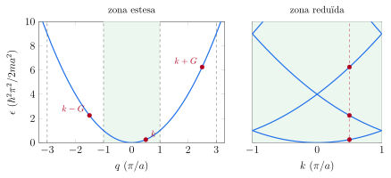
L'esquema reduït sembla una complicació gratuïta per a electrons lliures, però és el que s'adapta al cristall: quan s'hi afegeix el potencial, els estats que queden apilats a un mateix \(\vec k\) són precisament els que la matriu (8) acobla. I la figura ja diu on serà important l'acoblament: allà on dues bandes plegades es creuen, és a dir, a les vores de la zona (\(k=\pm\pi/a\)) i al centre (\(k=0\), entre la segona i la tercera banda). En aquests punts, dues ones planes del mateix grup tenen la mateixa energia.
3.2 Ones estacionàries a la vora de la zona
Mirem què passa exactament a la vora de la zona d'una cadena, \(k=\pi/a\). Les dues ones planes del grup amb la mateixa energia són \(e^{i\pi x/a}\), que va cap a la dreta, i \(e^{i(\pi/a-2\pi/a)x}=e^{-i\pi x/a}\), que va cap a l'esquerra. La condició (4) diu que la primera és reflectida per Bragg cap a la segona, i la segona cap a la primera: com les ones elàstiques de la vora de zona del Tema 4, l'estat estacionari no pot ser una ona viatgera. Les dues combinacions possibles són ones estacionàries, \[\psi_+\propto e^{i\pi x/a}+e^{-i\pi x/a}=2\cos\frac{\pi x}{a},\qquad \psi_-\propto e^{i\pi x/a}-e^{-i\pi x/a}=2i\sin\frac{\pi x}{a} . \tag{12}\]
Per a una ona viatgera, \(|\psi|^2\) és constant, i l'electró veu el potencial mitjà, que hem posat a zero. Les ones estacionàries, en canvi, acumulen l'electró en llocs diferents. Si els ions són als punts \(x=0,a,2a,\dots\), on el potencial és més atractiu, \(|\psi_+|^2\propto\cos^2(\pi x/a)\) té els màxims sobre els ions, i \(|\psi_-|^2\propto\sin^2(\pi x/a)\), entre ells. La primera té una energia potencial mitjana negativa, i la segona, positiva: a la mateixa energia cinètica, les dues ones estacionàries tenen energies diferents. Aquest és l'origen del buit d'energia.
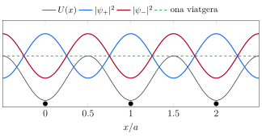
Amb un potencial \(U(x)=2U_G\cos(2\pi x/a)\), i \(U_G<0\) perquè els mínims siguin als ions, la diferència d'energia potencial mitjana entre les dues ones es calcula directament: amb \(|\psi_+|^2=2\cos^2(\pi x/a)=1+\cos(2\pi x/a)\) i \(|\psi_-|^2=2\sin^2(\pi x/a)=1-\cos(2\pi x/a)\), \[\langle U\rangle_\pm=\frac1a\int_0^a 2U_G\cos\frac{2\pi x}{a}\left[1\pm\cos\frac{2\pi x}{a}\right]dx=\pm U_G ,\] i la diferència entre les dues és \(2|U_G|\). El càlcul de la subsecció següent ho confirma i hi afegeix què passa a prop de la vora.
3.3 El buit d'energia: un problema de dos nivells
Prop de la vora de la zona, \(k\simeq G/2\), dues ones planes del grup de \(k\) tenen energies cinètiques gairebé iguals, \(\lambda_k=\hbar^2k^2/2m\) i \(\lambda_{k-G}=\hbar^2(k-G)^2/2m\), i totes les altres en tenen molt més. Si el potencial és feble, només aquestes dues es barregen de manera apreciable, i n'hi ha prou de quedar-se amb dues equacions de l'equació central: \[\begin{pmatrix}\lambda_k & U_G\\ U_G & \lambda_{k-G}\end{pmatrix} \begin{pmatrix}c_k\\ c_{k-G}\end{pmatrix}=\epsilon\begin{pmatrix}c_k\\ c_{k-G}\end{pmatrix} . \tag{13}\] Els valors propis són les arrels de \((\lambda_k-\epsilon)(\lambda_{k-G}-\epsilon)-U_G^2=0\), \[\epsilon_\pm(k)=\frac{\lambda_k+\lambda_{k-G}}{2}\pm\sqrt{\left(\frac{\lambda_k-\lambda_{k-G}}{2}\right)^2+U_G^2} . \tag{14}\] Lluny de la vora, quan \(|\lambda_k-\lambda_{k-G}|\gg|U_G|\), l'arrel val pràcticament \(|\lambda_k-\lambda_{k-G}|/2\), i les dues solucions tornen a ser les energies lliures, amb correccions d'ordre \(U_G^2/(\lambda_k-\lambda_{k-G})\). Just a la vora, \(\lambda_k=\lambda_{k-G}\equiv\lambda\), i \[\boxed{\epsilon_\pm=\lambda\pm|U_G|,\qquad E_g=2|U_G|} \tag{15}\] El potencial obre un buit d'energia (band gap) d'amplada igual al doble del coeficient de Fourier del potencial corresponent a aquella vora: no hi ha cap estat amb energia entre \(\lambda-|U_G|\) i \(\lambda+|U_G|\). Els vectors propis a la vora són \(c_{k-G}=\pm c_k\) (amb el signe que depèn del de \(U_G\)): les ones estacionàries \(\psi_\pm\) de l'equació (12).
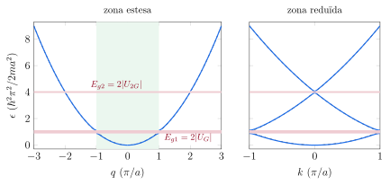
L'exercici 7.4 aplica aquest mateix càlcul de dos nivells a la cantonada de la zona d'una xarxa quadrada.
3.4 Prop de la vora: la corbatura de les bandes
L'equació (14) diu també com són les bandes a prop de la vora, i el resultat serà important al model semiclàssic. Escrivim \(k=G/2+\kappa\), amb \(\kappa\) petit, i anomenem \(\lambda=\hbar^2(G/2)^2/2m\) l'energia lliure a la vora. Aleshores \[\frac{\lambda_k+\lambda_{k-G}}{2}=\lambda+\frac{\hbar^2\kappa^2}{2m},\qquad \left(\frac{\lambda_k-\lambda_{k-G}}{2}\right)^2=\left(\frac{\hbar^2G\kappa}{2m}\right)^2=4\lambda\,\frac{\hbar^2\kappa^2}{2m} ,\] i, si \(\hbar^2\kappa^2/2m\) és prou petit, l'arrel de l'equació (14) es pot desenvolupar com \(\sqrt{U_G^2+x}\simeq|U_G|+x/2|U_G|\): \[\epsilon_\pm(\kappa)\simeq\lambda\pm|U_G|+\frac{\hbar^2\kappa^2}{2m}\left(1\pm\frac{2\lambda}{|U_G|}\right) =\lambda\pm\frac{E_g}{2}+\frac{\hbar^2\kappa^2}{2m}\left(1\pm\frac{4\lambda}{E_g}\right) . \tag{16}\] A banda i banda del buit, l'energia torna a ser quadràtica en la distància a la vora, com la d'una partícula lliure, però amb una “massa” diferent: \[\frac{m^*}{m}=\frac{1}{1\pm4\lambda/E_g}\simeq\pm\frac{E_g}{4\lambda}\qquad(E_g\ll\lambda) . \tag{17}\] Per a la banda de sobre (signe \(+\)), la massa és positiva i molt més petita que la de l'electró si el buit és petit comparat amb \(\lambda\). Per a la de sota, és negativa: l'energia baixa en allunyar-se de la vora, perquè la banda hi té un màxim. Aquestes dues masses, la petita i la negativa, són la massa efectiva que la secció 6 interpretarà.
3.5 El model de Kronig i Penney
El model de dos nivells és aproximat. Hi ha un potencial periòdic per al qual l'equació de Schrödinger es pot resoldre exactament, i que mostra de cop tot el ventall de comportaments: el de R. de L. Kronig i W. G. Penney (1931). En la versió més senzilla, el potencial és una pinta de barreres molt primes i molt altes, que es representen amb deltes de Dirac, \[U(x)=A\sum_n\delta(x-na),\qquad A>0 .\]
L'equació (18) relaciona l'energia, a través de \(K\), amb el vector d'ona de Bloch \(k\). Per a cada energia es calcula el costat dret, i si val entre \(-1\) i \(1\) hi ha un \(k\) real que hi correspon: l'energia és permesa. Si el costat dret surt d'aquest interval, no hi ha cap estat de Bloch amb aquella energia: és un buit. La figura ho mostra per a \(P=3\pi/2\), el mateix valor que fa servir Kittel.
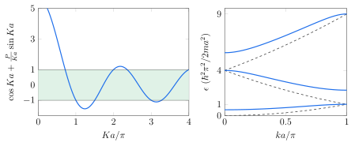
Els dos límits del model són els dos camins d'aquest tema. Quan \(P\to0\), l'equació es redueix a \(\cos ka=\cos Ka\), és a dir, \(K=k+G\): l'electró lliure a la xarxa buida. Quan \(P\to\infty\), les barreres són impenetrables i el costat dret només pot valer entre \(-1\) i \(1\) si \(\sin Ka\simeq0\): les bandes es redueixen a franges estretíssimes al voltant de \(Ka=n\pi\), que són els nivells d'un pou infinit d'amplada \(a\). Cada pou és un “àtom” aïllat, i l'efecte túnel a través de les barreres eixampla cada nivell en una banda. És exactament el punt de partida de la secció 4. L'exercici 7.3 estudia el límit de \(P\) petit: l'energia del fons de la primera banda i l'amplada del primer buit.
3.6 Les bandes del silici
Els càlculs reals de bandes resolen l'equació central (8) en tres dimensions, amb centenars o milers d'ones planes i un potencial efectiu calculat de manera autoconsistent a partir de la mateixa densitat electrònica. La figura compara el resultat d'un d'aquests càlculs per al silici, fet amb el programa Quantum ESPRESSO a la pràctica del curs, amb les bandes de la xarxa buida, l'equació (11), per a la mateixa xarxa FCC.
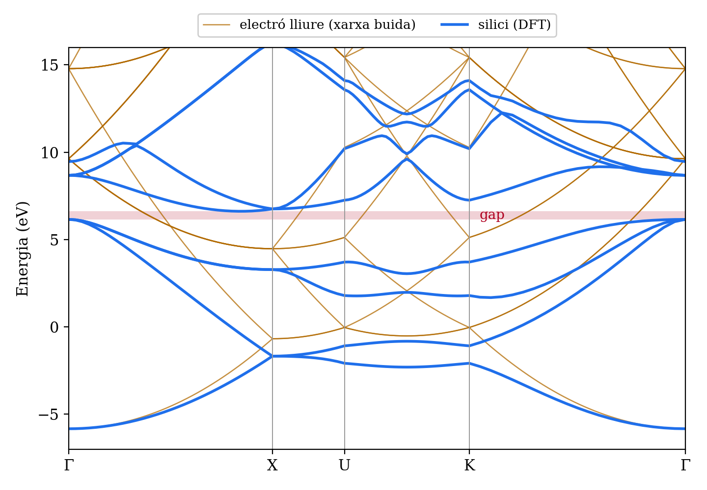
La figura il·lustra bé quines coses del model d'electrons gairebé lliures es mantenen en un cas real i quines no.
- A prop de \(\Gamma\), la primera banda segueix la paràbola lliure.
- A X, l'estat lliure més baix és doblement degenerat (\(\vec k=(2\pi/a)(1,0,0)\) i \(\vec k-\vec G\) amb \(\vec G=(2\pi/a)(2,0,0)\)), i al càlcul continua sent-ho, encara que més avall: el factor d'estructura del diamant s'anul·la per a \(\vec G=(2\pi/a)(2,0,0)\), i amb ell \(U_{\vec G}\). En canvi, el nivell lliure següent, quatre vegades degenerat, es parteix en dos parells separats per \(3.5\) eV.
- Els vuit electrons de valència de cada cel·la primitiva (dos àtoms) omplen exactament les quatre primeres bandes, i la cinquena comença per sobre d'un buit: el silici és un semiconductor (secció 5). El mínim de la banda de conducció no és a \(\Gamma\) sinó al tram \(\Gamma\)–X, al \(83\%\) del camí, i el màxim de la de valència és a \(\Gamma\): el buit és indirecte, una propietat important al Tema 8.
L'exercici 7.2 construeix a mà les bandes de la xarxa buida d'una FCC en la direcció \([111]\), el tram \(\Gamma\)–L que la figura no mostra.
4 L'enllaç fort
El model d'electrons gairebé lliures funciona quan el potencial és feble. Però hi ha electrons que noten molt el potencial dels ions: els de les capes internes, els \(d\) dels metalls de transició, o els de valència d'un aïllant iònic. Per a ells és més natural el camí invers: partir dels àtoms aïllats, amb els seus orbitals, i veure què passa quan s'acosten. És la combinació lineal d'orbitals atòmics (LCAO), o model d'enllaç fort (tight binding).
4.1 De dos àtoms a un cristall
Al Tema 3 vam fer aquest càlcul per a l'ió H\(_2^+\). Recordem-ne l'estructura amb una notació que ens servirà per al cristall. Siguin \(|\phi_A\rangle\) i \(|\phi_B\rangle\) els orbitals de dos àtoms iguals, amb la mateixa energia \(\epsilon_0\) quan els àtoms són aïllats, i suposem, per simplificar, que són ortogonals. L'hamiltonià de la molècula es pot escriure de dues maneres, \(\hat H=\hat H_A+\hat V_B=\hat H_B+\hat V_A\): l'hamiltonià d'un dels àtoms més el potencial de l'altre nucli. Quan els àtoms són lluny, \(\hat V_B\) és negligible sobre \(|\phi_A\rangle\), i cada orbital és un estat propi. Quan s'acosten, l'orbital de cada àtom nota el potencial del veí, i els estats propis passen a ser combinacions dels dos, \(|\psi\rangle=c_A|\phi_A\rangle+c_B|\phi_B\rangle\). L'equació de Schrödinger es converteix en un problema de valors propis \(2\times2\), \[\begin{pmatrix}\epsilon_0 & -t\\ -t & \epsilon_0\end{pmatrix} \begin{pmatrix}c_A\\ c_B\end{pmatrix}=\epsilon\begin{pmatrix}c_A\\ c_B\end{pmatrix}, \qquad -t\equiv\langle\phi_A|\hat H|\phi_B\rangle=\langle\phi_A|\hat V_B|\phi_B\rangle ,\] on hem aproximat \(\langle\phi_A|\hat H|\phi_A\rangle\simeq\epsilon_0\). L'element de matriu entre orbitals veïns és negatiu per a orbitals \(s\), perquè el potencial del nucli veí és atractiu, i l'escrivim com \(-t\) amb \(t>0\): és el \(H_{AB}\) del Tema 3. S'anomena integral de salt (hopping), perquè, com veurem, mesura la facilitat amb què l'electró passa d'un àtom a l'altre. Les solucions són \[\epsilon_\mp=\epsilon_0\mp t,\qquad |\psi_\mp\rangle=\frac{1}{\sqrt2}\big(|\phi_A\rangle\pm|\phi_B\rangle\big) :\] la combinació simètrica és l'orbital enllaçant, amb energia \(\epsilon_0-t\), i l'antisimètrica, l'antienllaçant, amb \(\epsilon_0+t\). El nivell atòmic s'ha desdoblat en dos, separats per \(2t\).
4.2 La cadena d'àtoms
Posem ara \(N\) àtoms iguals en una cadena, a les posicions \(x_n=na\), amb un orbital \(|\phi_n\rangle\) a cada lloc, i tanquem la cadena en un anell, \(|\phi_{n+N}\rangle=|\phi_n\rangle\). Busquem els estats com a combinacions de tots els orbitals, \[|\psi\rangle=\sum_{n}c_n\,|\phi_n\rangle .\] L'hamiltonià és \(\hat H=\hat H_n+\sum_{m\neq n}\hat V_m\): l'àtom \(n\) més el potencial de tots els altres. En l'aproximació d'enllaç fort a primers veïns, ens quedem amb els elements de matriu més grans: \(\langle\phi_n|\hat H|\phi_n\rangle\simeq\epsilon_0\) a la diagonal, \(\langle\phi_n|\hat H|\phi_{n\pm1}\rangle=-t\) entre veïns, i zero entre àtoms més allunyats. Projectant l'equació de Schrödinger sobre \(\langle\phi_n|\), \[\epsilon_0\,c_n-t\,c_{n+1}-t\,c_{n-1}=\epsilon\,c_n ,\qquad n=1,\dots,N . \tag{19}\] Són \(N\) equacions acoblades, una per àtom, exactament com les equacions de moviment de la cadena d'àtoms i molles del Tema 4. I es resolen de la mateixa manera: la cadena és invariant sota translacions d'un àtom, i provem una solució en què cada coeficient és el del veí amb un retard de fase fix, \[c_n=\frac{1}{\sqrt N}\,e^{ikna},\qquad k=\frac{2\pi}{Na}\,s,\quad s=0,1,\dots,N-1 , \tag{20}\] on els valors de \(k\) són els que permet la condició de l'anell, \(e^{ikNa}=1\). L'estat corresponent és una funció de Bloch: si traslladem tota la funció d'ona un àtom, l'orbital de l'àtom \(n\) passa al lloc \(n+1\) i el coeficient que hi correspon es multiplica per \(e^{ika}\), que és l'equació (10). Substituint (20) a (19) i dividint per \(c_n\), \[\epsilon=\epsilon_0-t\left(e^{ika}+e^{-ika}\right),\] és a dir, \[\boxed{\epsilon(k)=\epsilon_0-2t\cos ka} \tag{21}\]
Els \(N\) nivells atòmics, que eren iguals quan els àtoms eren lluny, s'han repartit en una banda d'amplada \(W=4t\) centrada a l'energia atòmica. L'estat més baix, \(k=0\), té tots els coeficients en fase, i és l'anàleg de l'orbital enllaçant: enllaçant entre cada parell de veïns. El més alt, \(k=\pi/a\), té coeficients \((-1)^n\), de signe alternat: antienllaçant entre tots els veïns. Entremig, cada valor de \(k\) correspon a un desfasament \(ka\) entre veïns, i la probabilitat de trobar l'electró a cada àtom és la mateixa per a tots els estats, \(|c_n|^2=1/N\).
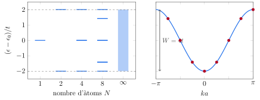
4.3 Amplada de banda, massa efectiva i densitat d'estats
La banda d'enllaç fort té tres propietats que es llegeixen directament de l'equació (21).
L'amplada és proporcional al solapament. La integral de salt \(t\) depèn de quant se solapen els orbitals de dos àtoms veïns, i decreix exponencialment amb la distància entre ells, com la cua dels orbitals. Com més estès és l'orbital, o més a prop són els àtoms, més ampla és la banda. Els orbitals interns d'un àtom, molt localitzats, donen bandes estretíssimes, pràcticament nivells atòmics; els de valència, bandes de diversos electronvolts.
Al fons i al cim, la banda és una paràbola. Desenvolupant el cosinus al voltant de \(k=0\), \[\epsilon(k)\simeq\epsilon_0-2t+t\,a^2k^2=\epsilon_0-2t+\frac{\hbar^2k^2}{2m^*},\qquad m^*=\frac{\hbar^2}{2ta^2} .\] Prop del fons, l'electró es comporta com una partícula lliure de massa \(m^*\), inversament proporcional a la integral de salt: una banda estreta és una banda “pesant”. Al cim, \(k=\pi/a\), la paràbola és cap avall i la massa és \(-m^*\). És el mateix que l'equació (17) deia per al model gairebé lliure, ara des de l'altre extrem.
La densitat d'estats es concentra a les vores. Cada banda té \(N\) valors de \(k\) i, amb l'espín, \(2N\) estats. En una dimensió, el nombre d'estats a l'interval \(d\epsilon\) és el de vectors d'ona a \(dk\), dues vegades (\(\pm k\)) i dues per l'espín, amb \(L/2\pi\) vectors per unitat de \(k\): \[g(\epsilon)=\frac{2L}{\pi}\,\frac{1}{|d\epsilon/dk|}=\frac{2N}{\pi}\,\frac{1}{\sqrt{4t^2-(\epsilon-\epsilon_0)^2}} .\] La integral sobre tota la banda dona exactament \(2N\). Als extrems, on la banda és plana, la densitat d'estats divergeix com la del gas lliure en una dimensió del Tema 6, i al centre és mínima.
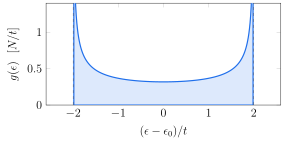
L'última observació té una conseqüència immediata: amb el mateix nombre d'estats, \(2N\) per orbital, una banda estreta té molts estats per unitat d'energia. Ho farem servir a la secció 6.5 per entendre la calor específica dels metalls de transició.
4.4 Tres dimensions
En un cristall tridimensional amb un orbital \(s\) a cada punt d'una xarxa de Bravais, el mateix raonament dona \[\epsilon(\vec k)=\epsilon_0-t\sum_{\vec\delta}e^{i\vec k\cdot\vec\delta}, \tag{22}\] on la suma recorre els vectors \(\vec\delta\) que uneixen un àtom amb els seus primers veïns. Per a una xarxa cúbica simple, amb sis veïns a \(\pm a\hat x\), \(\pm a\hat y\) i \(\pm a\hat z\), \[\epsilon(\vec k)=\epsilon_0-2t\left(\cos k_xa+\cos k_ya+\cos k_za\right),\] una banda d'amplada \(12t\), amb el mínim a \(\Gamma\) i el màxim a la cantonada de la zona, \((\pi/a)(1,1,1)\). Prop del mínim, \(\epsilon\simeq\epsilon_0-6t+ta^2k^2\): una paràbola isòtropa amb la mateixa massa \(m^*=\hbar^2/2ta^2\) de la cadena, i superfícies d'energia constant esfèriques, com les del gas lliure. A energies més altes, les superfícies d'energia constant es deformen i acaben tocant les vores de la zona.
Cada nivell atòmic dona la seva pròpia banda: un orbital \(s\) dona una banda, els tres orbitals \(p\) en donen tres, i els cinc \(d\), cinc. Si els nivells atòmics són prou separats en comparació amb les amplades, les bandes no se solapen, i entre elles hi ha buits que són, simplement, el record de la separació entre els nivells de l'àtom aïllat. Quan les bandes s'eixamplen prou per encavalcar-se, els orbitals es barregen, i cal tractar-los junts amb una matriu més gran, una fila per orbital.
4.5 Dos camins i una mateixa imatge
Els dos models parteixen d'extrems oposats i arriben al mateix lloc.
| Electrons gairebé lliures | Enllaç fort | |
|---|---|---|
| Punt de partida | ones planes, \(\epsilon=\hbar^2k^2/2m\) | orbitals atòmics, \(\epsilon=\epsilon_0\) |
| Pertorbació | coeficients \(U_{\vec G}\) del potencial | integral de salt \(t\) |
| Origen del buit | reflexió de Bragg a la vora de la zona | separació entre nivells atòmics |
| Bona descripció de | metalls alcalins, Al, bandes \(s\) i \(p\) | bandes \(d\), capes internes, aïllants |
En tots dos, els estats són funcions de Bloch, cada banda té \(N\) vectors d'ona i \(2N\) estats, les bandes són paràboles a prop dels extrems, i entre bandes hi pot haver buits. El model de Kronig i Penney passa de l'un a l'altre de manera contínua en fer créixer \(P\). Els càlculs reals, com el del silici, no són ni l'un ni l'altre, però la imatge qualitativa és la mateixa.
Els cristalls covalents com el silici i el diamant s'entenen bé des de l'enllaç fort. Cada àtom forma quatre orbitals híbrids \(sp^3\) dirigits cap als seus quatre veïns, i els orbitals de dos veïns que s'apunten l'un a l'altre formen un orbital enllaçant i un d'antienllaçant, com a l'H\(_2^+\) del Tema 3. Els salts entre enllaços veïns eixamplen cada nivell en bandes: els orbitals enllaçants donen la banda de valència, i els antienllaçants, la de conducció. El buit és el que queda entre totes dues, i és més gran com més fort és l'enllaç. L'entregable d'aquest tema aplica aquesta idea a un cas concret.
5 Bandes plenes i buides: metalls, aïllants i semimetalls
5.1 Quants estats hi ha en una banda
Els dos models, i el teorema de Bloch en general, coincideixen en el recompte: cada banda té exactament un vector d'ona per cada cel·la primitiva del cristall, i, amb les dues orientacions de l'espín, \[\boxed{\text{cada banda té } 2N \text{ estats}} \tag{23}\] on \(N\) és el nombre de cel·les primitives. A l'enllaç fort és evident: \(N\) àtoms aporten \(N\) orbitals, i en surten \(N\) combinacions. Al model gairebé lliure, és la conseqüència de plegar: cada zona de Brillouin té el mateix volum que la primera, i per tant el mateix nombre de vectors d'ona.
A \(T=0\), els electrons ocupen les bandes de menys a més energia fins a esgotar-se. Si cada cel·la primitiva aporta \(z_c\) electrons de valència, n'hi ha \(z_cN\) en total, i n'hi ha prou per omplir \(z_c/2\) bandes. Que el material condueixi o no depèn d'una pregunta: l'energia de Fermi cau dins d'una banda, o en un buit?
5.2 Una banda plena no condueix
Per conduir, els electrons han de poder canviar d'estat quan s'aplica un camp, de manera que el balanç de velocitats deixi de ser zero. En una banda parcialment plena, els electrons de la superfície de Fermi tenen estats lliures just al costat, i el camp els hi porta, com al Tema 6. En una banda completament plena, no hi ha cap estat lliure a la mateixa banda. La simetria \(\epsilon_n(-\vec k)=\epsilon_n(\vec k)\) fa que per a cada electró amb velocitat \(\vec v\) n'hi hagi un altre amb velocitat \(-\vec v\), i el corrent total és zero. Un camp moderat no pot canviar aquesta situació: per moure un electró a un estat buit, l'hauria de fer saltar tot el buit d'energia fins a la banda següent. La secció 6.4 ho tornarà a veure amb el model semiclàssic.
5.3 Comptar electrons per cel·la
El recompte (23) té una conseqüència senzilla i potent. Dins de l'aproximació d'un electró, un material amb un nombre senar d'electrons de valència per cel·la primitiva té necessàriament almenys una banda parcialment plena, i ha de ser un metall. Un material amb un nombre parell pot omplir bandes senceres, i serà aïllant si l'última banda plena queda separada de la següent per un buit a totes les direccions de \(\vec k\). Però si dues bandes s'encavalquen en energia (el màxim de l'una, en una direcció, és més alt que el mínim de l'altra, en una altra direcció), els electrons es reparteixen entre les dues, i hi ha dues bandes parcialment plenes: el material és un metall.
| Material | Estructura | Àtoms/cel·la | Electrons/cel·la | Comportament |
|---|---|---|---|---|
| Na, K | BCC | 1 | 1 | metall |
| Cu, Ag | FCC | 1 | 1 | metall |
| Al | FCC | 1 | 3 | metall |
| Ca | FCC | 1 | 2 | metall (encavalcament) |
| Mg, Be | HCP | 2 | 4 | metall (encavalcament) |
| Bi | romboèdrica | 2 | 10 | semimetall |
| Si, Ge | diamant | 2 | 8 | semiconductor |
| NaCl | FCC amb base | 2 | 8 | aïllant |
| Ar | FCC | 1 | 8 | aïllant |
Electrons de valència: Na \(3s^1\), Al \(3s^2\,3p^1\), Si \(3s^2\,3p^2\), Bi \(6s^2\,6p^3\); al NaCl, un electró del sodi i set del clor; a l'argó, la capa \(3s^2\,3p^6\) sencera. Als metalls nobles s'hi compta només l'electró \(s\), perquè la capa \(d\) forma bandes plenes per sota de l'energia de Fermi.
Els metalls alcalins i nobles, amb un electró per cel·la, tenen la banda més baixa a mig omplir: són els metalls més “lliures”. L'alumini, amb tres, també ho ha de ser. Els alcalinoterris, amb dos electrons per cel·la, podrien ser aïllants, però les seves bandes s'encavalquen i són metalls. El silici i el germani, amb vuit electrons per cel·la, omplen exactament quatre bandes, com hem vist a la figura de la secció 3.6, i l'energia de Fermi cau al buit.
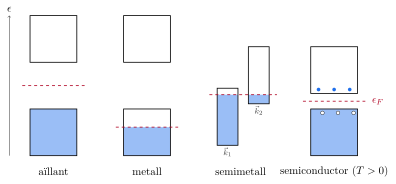
5.4 Aïllants i semiconductors
Entre un aïllant i un semiconductor no hi ha cap diferència de principi: tots dos tenen l'energia de Fermi dins d'un buit, i a \(T=0\) no condueixen. La diferència és la mida del buit comparada amb l'energia tèrmica, \(k_BT=0.0259\) eV a \(300\) K. Per convenció, es parla de semiconductors quan el buit és d'uns pocs electronvolts o menys.
| Cristall | Tipus | \(E_g\) (\(0\) K) | \(E_g\) (\(300\) K) | Cristall | Tipus | \(E_g\) (\(0\) K) | \(E_g\) (\(300\) K) |
|---|---|---|---|---|---|---|---|
| Diamant | i | 5.4 | — | InSb | d | 0.23 | 0.17 |
| Si | i | 1.17 | 1.11 | InAs | d | 0.43 | 0.36 |
| Ge | i | 0.744 | 0.66 | InP | d | 1.42 | 1.27 |
| \(\alpha\)Sn | d | 0.00 | 0.00 | GaP | i | 2.32 | 2.25 |
| GaAs | d | 1.52 | 1.43 | CdS | d | 2.582 | 2.42 |
Buits d'energia en eV (Kittel, capítol 8, taula 1). i: buit indirecte (el mínim de la banda de conducció i el màxim de la de valència són a vectors \(\vec k\) diferents); d: buit directe (tots dos al mateix \(\vec k\); en aquests cristalls, a \(\Gamma\)). El buit disminueix lleugerament amb la temperatura.
5.5 Metalls divalents i semimetalls
L'encavalcament de bandes que fa metàl·lics els alcalinoterris es pot entendre amb la xarxa buida. En una xarxa quadrada amb dos electrons per cel·la, el cercle de Fermi de l'electró lliure té la mateixa àrea que la primera zona, però no la mateixa forma: sobresurt pel mig de les cares i deixa buides les cantonades. Els electrons de fora de la zona ocupen la segona banda, i els estats buits de les cantonades són a la primera. Si el potencial és feble, cap de les dues bandes no queda plena. Si fos molt fort, els buits a les vores podrien ser prou grans per fer que fos més barat omplir les cantonades de la primera banda: el material seria aïllant. L'exercici 7.1 compara les energies del mig de la cara i de la cantonada en dues i tres dimensions.
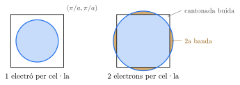
Quan l'encavalcament és molt petit, el material té molt pocs electrons a la banda de sobre i molt pocs estats buits a la de sota: és un semimetall. El cas típic és el bismut, amb dos àtoms de cinc electrons per cel·la, que podria ser aïllant si no fos per un encavalcament de només unes centèsimes d'electronvolt entre dues bandes situades en regions diferents de la zona.
6 El model semiclàssic
Les bandes són estats estacionaris. Per explicar el transport cal saber com es mou un electró d'una banda quan s'hi aplica un camp elèctric o magnètic. La resposta completa demanaria resoldre l'equació de Schrödinger depenent del temps amb el potencial periòdic i el camp, però hi ha una descripció molt més senzilla, i suficient per a gairebé tot: el model semiclàssic. Tracta l'electró com un paquet d'ones format per estats de Bloch d'una sola banda, que es mou com una partícula clàssica, però amb la relació \(\epsilon_n(\vec k)\) de la banda en lloc de \(\hbar^2k^2/2m\).
6.1 La velocitat d'un electró de Bloch
Un electró localitzat és un paquet d'ones format per estats de Bloch amb vectors d'ona propers a un \(\vec k\) donat. Com els paquets d'ones elàstiques del Tema 4, es mou a la velocitat de grup, \(\vec v=\nabla_{\vec k}\omega\), i amb \(\epsilon=\hbar\omega\), \[\boxed{\vec v_n(\vec k)=\frac1\hbar\,\nabla_{\vec k}\,\epsilon_n(\vec k)} \tag{24}\] Per a l'electró lliure, \(\epsilon=\hbar^2k^2/2m\) i es recupera \(\vec v=\hbar\vec k/m\). Per a la banda d'enllaç fort (21), \[v(k)=\frac{2ta}{\hbar}\,\sin ka :\] la velocitat creix amb \(k\) al fons de la banda, és màxima al mig, \(ka=\pi/2\), i torna a zero a la vora de la zona. És el mateix que passava amb els fonons, i per la mateixa raó: a la vora, els estats són ones estacionàries, i no van enlloc. L'equació (24), que aquí deduïm amb l'argument del paquet d'ones, es pot demostrar amb teoria de pertorbacions sobre la funció periòdica \(u_{\vec k}\), el desenvolupament \(\vec k\cdot\vec p\) (Ashcroft i Mermin, apèndix E): la velocitat mitjana d'un electró en un estat de Bloch és la derivada de la banda.
6.2 L'equació del moviment
Si sobre l'electró actua una força externa \(\vec F\), durant un temps \(dt\) fa un treball \(\vec F\cdot\vec v\,dt\), que augmenta l'energia de l'electró. Si aquest augment es fa sense canviar de banda, l'energia nova és la de la mateixa banda en un vector d'ona una mica diferent, \(d\epsilon=\nabla_{\vec k}\epsilon\cdot d\vec k=\hbar\vec v\cdot d\vec k\). Igualant les dues expressions, \[\hbar\vec v\cdot\frac{d\vec k}{dt}=\vec F\cdot\vec v ,\] que es compleix per a qualsevol direcció de la velocitat si \[\boxed{\hbar\frac{d\vec k}{dt}=\vec F=-e\left(\vec E+\vec v\times\vec B\right)} \tag{25}\] L'argument només fixa la component de \(d\vec k/dt\) paral·lela a \(\vec v\), però el resultat és general (Ashcroft i Mermin, capítol 12). És la mateixa equació que el Tema 6 feia servir per desplaçar l'esfera de Fermi, ara vàlida en qualsevol banda. Té dues diferències importants amb la segona llei de Newton. La primera, que \(\vec F\) és només la força externa: la força dels ions sobre l'electró no hi és, perquè ja està inclosa en la forma de la banda \(\epsilon_n(\vec k)\). La segona, que el que canvia a ritme constant és el moment cristal·lí \(\hbar\vec k\), no la velocitat: la velocitat la dona l'equació (24), i pot créixer, disminuir o canviar de signe mentre \(\vec k\) avança.
6.3 La massa efectiva
Derivant la velocitat (24) respecte del temps i fent servir l'equació (25), \[\frac{dv_i}{dt}=\frac1\hbar\sum_j\frac{\partial^2\epsilon}{\partial k_i\,\partial k_j}\,\frac{dk_j}{dt} =\sum_j\left(\frac{1}{\hbar^2}\frac{\partial^2\epsilon}{\partial k_i\,\partial k_j}\right)F_j .\] L'electró respon a la força com una partícula de massa \(m^*\), amb \[\boxed{\left(\frac{1}{m^*}\right)_{ij}=\frac{1}{\hbar^2}\,\frac{\partial^2\epsilon_n(\vec k)}{\partial k_i\,\partial k_j}} \tag{26}\] la massa efectiva. En general és un tensor, perquè la corbatura de la banda pot ser diferent en cada direcció, i l'acceleració no ha de ser paral·lela a la força. Per a una banda isòtropa, és un número, \(m^*=\hbar^2/(d^2\epsilon/dk^2)\). Per a l'electró lliure, \(m^*=m\).
Per a la banda d'enllaç fort de la cadena, \(m^*(k)=\hbar^2/(2ta^2\cos ka)\). Al fons de la banda és la massa \(\hbar^2/2ta^2\) que ja havíem trobat; en créixer \(k\), la massa augmenta, es fa infinita a \(ka=\pi/2\), on la velocitat és màxima i no varia, i a la meitat superior de la banda és negativa. La figura ho resumeix.
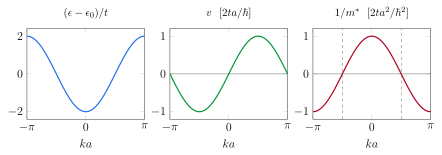
Als semiconductors, els electrons que condueixen són al fons de la banda de conducció, i els estats buits, al cim de la de valència, on les bandes són paràboles i la massa efectiva és constant. L'equació (17) del model gairebé lliure suggereix que, com més petit és el buit, més petita és la massa al fons de la banda de conducció. La taula ho comprova amb els semiconductors de buit directe.
| Cristall | \(E_g\) (\(0\) K, eV) | \(m^*_e/m\) | \(E_g/(m^*_e/m)\) (eV) |
|---|---|---|---|
| InSb | 0.23 | 0.015 | 15.3 |
| InAs | 0.43 | 0.026 | 16.5 |
| GaSb | 0.81 | 0.047 | 17.2 |
| InP | 1.42 | 0.073 | 19.5 |
| GaAs | 1.52 | 0.066 | 23.0 |
Buits de Kittel, capítol 8, taula 1, i masses efectives dels electrons de la taula 2 del mateix capítol.
La massa canvia en un factor cinc, i el quocient \(E_g/(m^*/m)\) només en un factor \(1.5\): la massa és, aproximadament, proporcional al buit. L'equació (17) diu que aquest quocient hauria de ser \(4\lambda\), quatre vegades l'energia lliure a la vora de la zona. Per al GaAs, amb \(a=5.65\) Å i la vora L de la zona a \(\sqrt3\,\pi/a\), \(4\lambda=4\times\hbar^2(\sqrt3\,\pi/a)^2/2m=14\) eV, del mateix ordre que els valors de la taula.
6.4 Els forats
Hem vist que una banda plena no porta corrent. Què passa si en una banda plena hi falta un sol electró, el de vector d'ona \(\vec k_e\)? El corrent és el de tots els electrons menys el que falta, \[\vec j=-\frac{e}{V}\sum_{\vec k\neq\vec k_e}\vec v(\vec k)=-\frac{e}{V}\Big[\underbrace{\sum_{\text{tots}}\vec v(\vec k)}_{0}-\vec v(\vec k_e)\Big]=+\frac{e}{V}\,\vec v(\vec k_e) .\] La banda gairebé plena porta el mateix corrent que portaria una sola partícula de càrrega \(+e\) amb la velocitat de l'electró que falta. Aquesta partícula és un forat. El camp desplaça tots els electrons de la banda segons l'equació (25), i l'estat buit es desplaça amb ells, com una bombolla dins d'un líquid: el forat és una manera de descriure el moviment col·lectiu de tots els electrons de la banda amb una sola partícula.
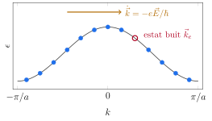
Al cim de la banda de valència d'un semiconductor, els pocs estats buits es comporten, doncs, com partícules de càrrega positiva i massa positiva, que es mouen en el sentit del camp elèctric. Un material on el corrent el porten forats té un coeficient de Hall positiu, \(R_H=+1/pe\), amb \(p\) la densitat de forats.
6.5 Els fils del Tema 6
Ja tenim totes les peces per tancar les preguntes que el Tema 6 va deixar obertes.
El coeficient de Hall positiu de l'alumini. Hem vist que l'esfera de Fermi de l'electró lliure de l'alumini embolcalla tota la primera zona. Comptant quina part de l'esfera cau a cada zona, la primera, que és tota dins, conté \(2\) electrons per àtom i és plena; la segona en conté \(0.94\), i la tercera, \(0.06\). La segona banda, que podria contenir-ne \(2\), té \(1.06\) estats buits per àtom: és una banda gairebé plena, de forats. La tercera té uns pocs electrons. Quan el camp magnètic és prou intens perquè els portadors facin òrbites senceres entre xocs (\(\omega_c\tau\gg1\)), el coeficient de Hall només depèn de la diferència entre les densitats d'electrons i de forats, \(R_H=-1/[(n_e-n_h)e]\) (Ashcroft i Mermin, capítols 12 i 15). I aquesta diferència no depèn dels detalls: \(3\) electrons per àtom, menys els \(2\) de la primera banda, és \(n_e+(2-n_h)=1\), és a dir, \(n_e-n_h=-1\) per àtom.
El beril·li és un cas semblant però més extrem: és un metall divalent amb dos àtoms per cel·la, quatre electrons, i les seves bandes gairebé no s'encavalquen. Té pocs electrons i pocs forats, amb els forats dominant: interpretant el seu \(R_H=+2.43\times10^{-10}\) m\(^3\)/C amb un sol portador, en surten \(0.21\) forats per àtom. Al coure, \(k_F=1.36\) Å\(^{-1}\) és el \(90\%\) de la distància a les cares hexagonals de la zona (\(1.50\) Å\(^{-1}\)): el potencial deforma l'esfera de Fermi fins a fer-la tocar aquestes cares, i el coeficient de Hall del coure, \(-5.4\times10^{-11}\) davant de \(-7.4\times10^{-11}\) m\(^3\)/C, ja s'aparta del de l'electró lliure.
Les masses tèrmiques. La calor específica electrònica és proporcional a la densitat d'estats a l'energia de Fermi, \(C_{\text{el}}=\frac{\pi^2}{3}g(\epsilon_F)k_B^2T\). Per a una banda parabòlica amb massa efectiva \(m^*\), \(g(\epsilon_F)\) és la de l'electró lliure amb \(m\) substituïda per \(m^*\), i el coeficient \(\gamma\) és proporcional a \(m^*\): la massa tèrmica \(m_{\text{th}}\) del Tema 6 conté la massa efectiva de la banda. No n'és l'única contribució, perquè la interacció amb els fonons també fa els electrons més pesants, però explica que \(m_{\text{th}}/m\) pugui ser més gran o més petita que \(1\) (al zinc, \(0.85\)).
6.6 Cap als semiconductors
El Tema 8 aplica tot el que hem vist a un tipus concret de materials. En un semiconductor, l'energia de Fermi és dins d'un buit d'uns pocs dècims d'electronvolt fins a un parell. A temperatura ambient, uns pocs electrons ocupen el fons de la banda de conducció, i deixen el mateix nombre de forats al cim de la banda de valència. Tots dos es descriuen amb bandes parabòliques i masses efectives, com electrons lliures de massa \(m^*_e\) i forats lliures de massa \(m^*_h\). Com que són molt pocs, formen un gas no degenerat, el límit de Boltzmann del Tema 6. I, sobretot, el nombre de portadors es pot canviar en molts ordres de magnitud afegint-hi impureses. Aquest serà el tema següent.